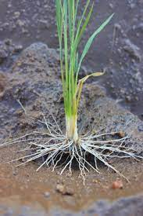

Ciri Padi Yang Normal
Page ini berisi tentang ciri padi yang normal, kandungan gizi, dan tata cara menanam dan merawat padi
Page ini berisi tentang ciri padi yang normal, kandungan gizi, dan tata cara menanam dan merawat padi
1. Jika kita memiliki BWD (alat ukur kehijauan daun padi) maka warna daun padi berada pada tingkat tertinggi atau satu kali perjalanan di bawahnya.

2. Jumlah anakan yang maksimum, padi sehat yang tumbuh dengan anakan yang melebihi 80% dari potensi maksimum.
3. Ujung akar tanaman padi berwarna putih. Tanda ketiga tanaman padi dalam kondisi sehat adalah jumlah ujung akar putih tanaman padi di setiap rumpun.
